Limpeza de Dados
Projeto desenvolvido em Python para realizar a limpeza e o pré-processamento de dados em um arquivo JSON, que contém informações sobre o churn de clientes de uma empresa de telecomunicações.
O que é Churn?
Churn é um termo usado para descrever a taxa de cancelamento de clientes de um serviço ou empresa. Ele representa a quantidade de clientes que deixaram de usar um produto ou serviço dentro de um determinado período.
Bibliotecas
As bibliotecas python utilizadas neste projeto foram:
- Pandas: Manipulação e análise de dados em tabelas (DataFrames), facilitando leitura, filtragem, transformação e visualização de dados.
- NumPy: Cálculos numéricos eficientes, oferecendo suporte para arrays multidimensionais e operações matemáticas otimizadas.
- Json: Manipulação de arquivos JSON, permitindo leitura, escrita e conversão entre JSON e estruturas de dados Python (dicionários e listas)
- Seaborn: Visualização de dados estatísticos, criando gráficos elegantes e informativos com base no Matplotlib.
Etapas do Projetos
- Análise de Dados Inicial
- A base de dados foi disponibilizada em um arquivo .JSON.
Neste bloco de código utilizei a função
pd.read_json()que é responsável por ler o arquivo .JSON onde a base de dados foi disponibilizada.Armazenei o arquivo .JSON dentro da variável
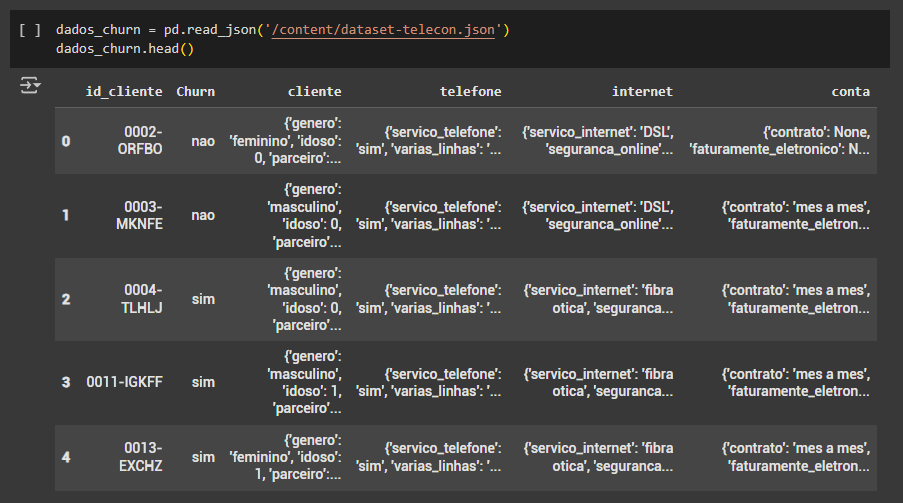dados_churne em seguida utilizei a funçãohead()para mostrar apenas as 5 primeiras linhas do DataFrame.Figura 2: Base de Dados.
- Analisando o DataFrame criado é possível observar que algumas colunas possuem dados aninhados.
O que são dados aninhados?
São estruturas de dados que contêm outras estruturas dentro delas, formando uma hierarquia. Isso é comum em formatos como JSON, dicionários em Python e listas dentro de listas.
Esse tipo de estrutura é muito usado em APIs, bancos de dados NoSQL e manipulação de informações em linguagens como Python.
Dado este contexto, é necessário normalizar os dados com o objetivo de deixar o DataFrame mais legível e, assim, falicitar a análise inicial e futuramente quando os dados forem utilizados em algum modelo de aprendizagem ou criar um dashboard.
O código
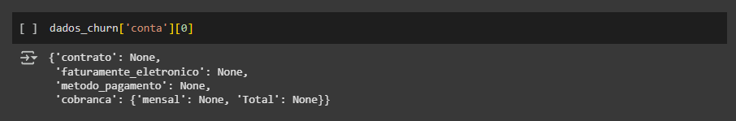dados_churn['conta'][0]está acessando o valor da coluna "conta" do DataFramedados_churnna primeira linha (índice 0).Figura 3: Coluna "conta".
A função
json_normalize()é responsável por transformar estruturas de dados complexas, como listas e dicionários dentro de outras listas e dicionários, em um formato tabular, onde cada chave do JSON se torna uma coluna do DataFrame.Ainda não estou armazenando os dados normalizados em uma variável específica. Minha intenção é apenas analisar qual é a estrutura por trás dos dados aninhados.
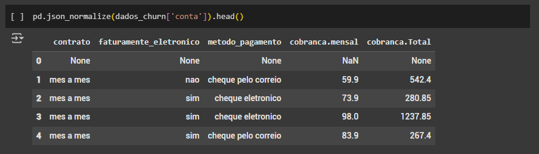Figura 4: Normalizando a coluna "conta". 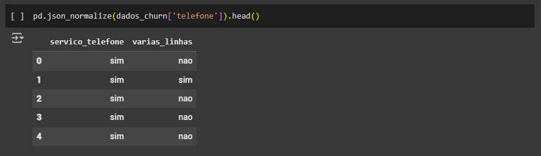Figura 5: Normalizando a coluna "telefone".
O código
with open('/content/dataset-telecon.json') as fé responsável por:- abrir o arquivo .JSON;
- garantir que o arquivo seja fechado corretamente após a leitura, evitando vazamento de recursos.
Breve explicação do código
json_bruto = json.load(f):- o módulo
jsoné utilizado para carregar o conteúdo do arquivo .JSON e convertê-lo em um objeto Python (geralmente um dicionário ou uma lista, dependendo da estrutura do JSON). - a função
load()lê o arquivo aberto(f)e transforma o .JSON em um objeto Python.
Qual é o resultado esperado?
- Se o JSON armazenado no arquivo for um dicionário, a variável
json_brutoserá umdict - Se o JSON armazenado for uma lista, a variável
json_brutoserá umalist
Figura 6: Estrutura dos Dados Aninhados.
-
Agora que possuo o arquivo .JSON convertido em um objeto Python é possível normalizar os dados aninhados facilmente de modo que as informações ainda respeitem a hierarquia inicial do arquivo bruto .JSON.
Armazenei o novo DataFrame, com os dados normalizados, na variável
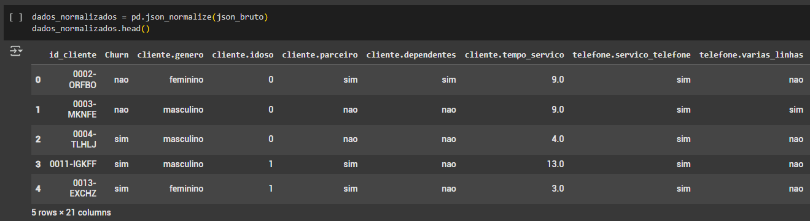dados_normalizados.Figura 7: Estrtura dos Dados Normalizados 1. 
Figura 8: Estrtura dos Dados Normalizados 2.
- A base de dados foi disponibilizada em um arquivo .JSON.
- Limpeza e Padronização dos Dados
Com os dados normalizados finalmente é possível iniciar o processo de limpeza e padronização dos dados.
A função
info()é responsável por exibir informações resumidas sobre o DataFrame como:- o número de linhas;
- o número de colunas;
- o tipo de dados de cada coluna (por exemplo:
int64,float64eobject); - o número de valores não nulos em cada coluna;
- a quantidade de memória utilizada pelo DataFrame.
Figura 9: Função info.
Utilizei o código abaixo para converter os valores da coluna
conta.cobranca.Totalpara o tipofloat.- dentro do DataFrame
dados_normalizados, estou acessando a colunaconta.cobranca.Total. - utilizo a função
astype(float)para converter os valores da coluna para o tipofloat, que são dados numéricos com ponto flutuante. - os resultados serão substituídos no DataFrame
dados_normalizadosna colunaconta.cobranca.Total.
Explicação deste bloco de código:
Figura 10: Primeira tentativa de padronização.
Obtive um erro como resultado, porém isso já era esperado.
O que aconteceu?
Conforme validado na
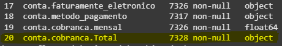Figura 9: Função info, é possível observar que a colunaconta.cobranca.Totalpossui oDtype(tipo de dado) definido comoobject.Figura 11: Validando o Dtype.
O que significa o tipo de dado
object?Quando o Python não consegue identificar o tipo de dado em uma coluna, o
Dtypeé definido comoobject.Sendo assim, a coluna pode conter dados numéricos (inteiros e flutuantes), texto, vazios e etc.
Logo, é necessário limpar e, posteriormente, padronizar os tipos de dados.
O erro apresentado na
Figura 10: Primeira tentativa de padronizaçãoestá informando:
ValueError: could not convert string to float: ' ',
ou seja, existe um ou mais valores em branco/vazios no DataFrame.
Porque não podem existir valores em branco no DataFrame?
Se o objetivo do DataFrame é ser utilizado em um aprendizado de máquina, dados nulos podem causar erros nos algoritmos, distorcer padrões, reduzir a qualidade das previsões e prejudicar na tomada de decisão.
Se o objetivo do DataFrame é ser utilizado na criação de Dashboards, dados nulos podem gerar gráficos incorretos, distorcer médias, causar erros em cálculos e visualizações e filtros e segmentações podem não funcionar corretamente.
Com isso em mente, realizei uma busca por valores em branco na coluna
conta.cobranca.Total.O comando
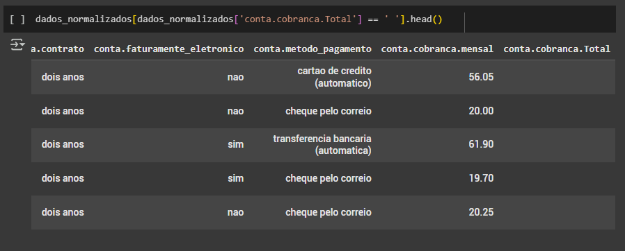head()está trazendo as 5 primeiras linhas que possuem os valores vazios nesta coluna.Figura 11: Validando os valores em branco.
Quero filtrar um pouco mais o DataFrame, buscando colunas que tenham relação com a coluna que estou tratando.
Sendo assim, o código abaixo foi executado:
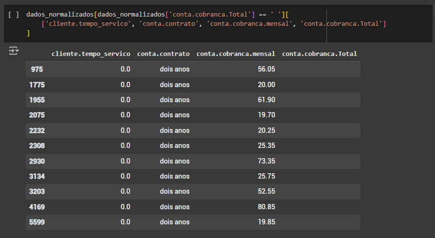Figura 13: Filtrando tabelas que tem relação.
O que está acontecendo no código?
- no DataFrame
dados_normalizados, estou filtrando a colunaconta.cobranca.Totale buscando por linhas que tenham conteúdo' ', ou seja, vazios. - o código
[['cliente.tempo_servico', 'conta.contrato', 'conta.cobranca.mensal', 'conta.cobranca.Total']]seleciona e exibe apenas estas colunas.
Qual relação elas possuem entre si?
- a coluna
cliente.tempo_servicocontém a informação de quanto tempo o cliente utiliza o serviço contratado. - a coluna
conta.contratocontém a informação de duração do contrato assinado pelo cliente. - a coluna
conta.cobranca.mensalcontém a informação do valor mensal do serviço contratado.
Com isso em mente, a coluna
conta.cobranca.Totaldeverá conter os valores totais referentes ao contrato. Ou seja, se o contrato é de 2 anos, será necessário multiplicar o valor mensal por 24 meses.
Para isso, é necessário que os valores sejam aplicados apenas nas linhas que não possuam esses valores.
Então optei por executar o código presente na imagem abaixo:

Figura 14: Encontrando os índices. O que está ocorrendo no código?
- o código está identificando os índices das linhas no DataFrame
dados_normalizadosque contém o valor' 'na colunaconta.cobranca.Total. - após encontrar os indíces, estes são armazenados na variável
idx.
Agora é possível realizar as devidas alterações corretamente.
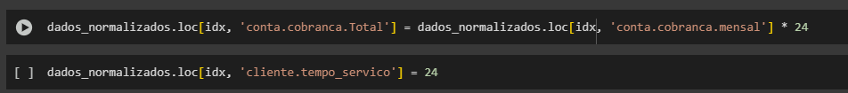Figura 15: Modificando a coluna 'conta.cobranca.Total' e 'cliente.tempo_servico'. O que está ocorrendo no código?
- primeiro acessei a coluna
conta.cobranca.Totalapenas nas linhas indicadas pela variávelidx. - o código
.loc[]é umacessador de rótulos(label-based indexer) no Pandas.
Ele permite acessar, filtrar e modificar valores em um DataFrame usando rótulos de índices e nomes de colunas. - o código preenche os valores vazios na coluna
conta.cobranca.Totalcom um cálculo baseado na multiplicação entre a colunaconta.cobranca.mensalpor 24, que é correspondente ao período do contrato. - aproveitando o gancho, também segui alterando para 24 as linhas na coluna
cliente.tempo_servico, pois estes índices tinham valores zerados nesta coluna.
Observando novamente o DataFrame filtrado, é possível validar que os valores foram alterados corretamente.
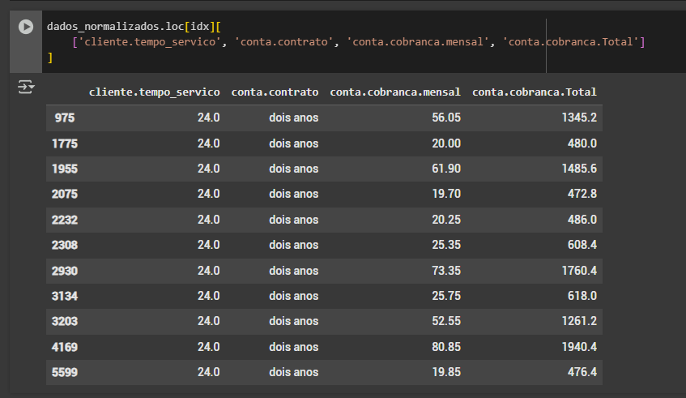Figura 16: Validando as colunas 'conta.cobranca.Total' e 'cliente.tempo_servico'.
Agora já deve ser possível alterar o tipo de dado na coluna
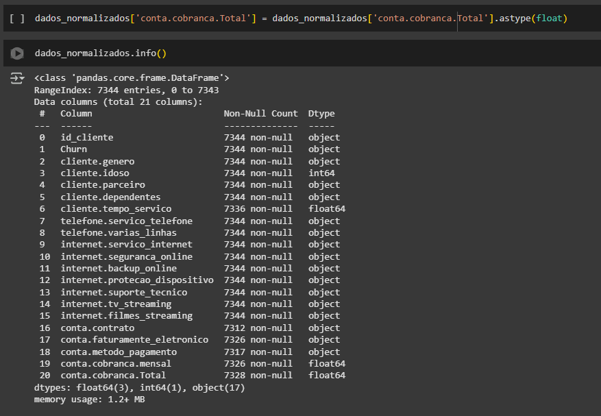conta.cobranca.Total.Figura 17: Validando o dtype da coluna 'conta.cobranca.Total'. 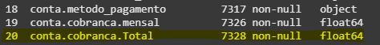Figura 18: Validando o dtype da coluna 'conta.cobranca.Total'.
Com o código abaixo, estou retornando os valores existentes em cada uma das colunas, com o objetivo de identificar qual a próxima coluna que deve ser analisada, limpa e padronizada.
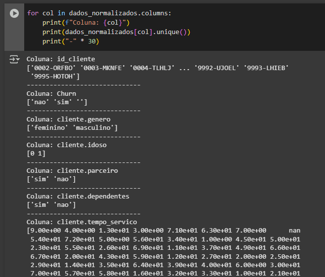Figura 19: Validando o dtype da coluna 'conta.cobranca.Total'. A coluna escolhida foi
churn.Analisando os valores retornados para esta coluna, é possível identificar que existem dois valores
simenão, porém esta coluna também contém valores nulos.O objetivo deste DataFrame é ser utilizado por um aprendizado de máquina, para que este saiba identificar informações referentes ao
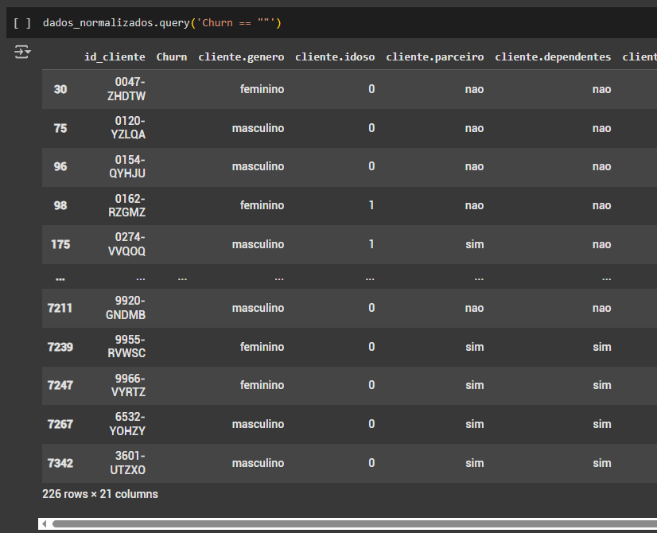churn, ou seja clientes que cancelaram seus serviços.
Neste caso, optei por não analisar profundamente se o cliente cancelou de fato ou não. Então segui apenas filtrando as linhas que de fato tem valor na colunachurn.Figura 20: Filtrando a coluna 'Churn' utilizando o método query. O que está ocorrendo no código acima?
- Utilizei o método
query()que permite filtrar um DataFrame usando uma expressão emstring, semelhante a uma cláusulaWHEREem SQL. - A expressão
Churn == ""está filtrando apenas valores" ", vazios.
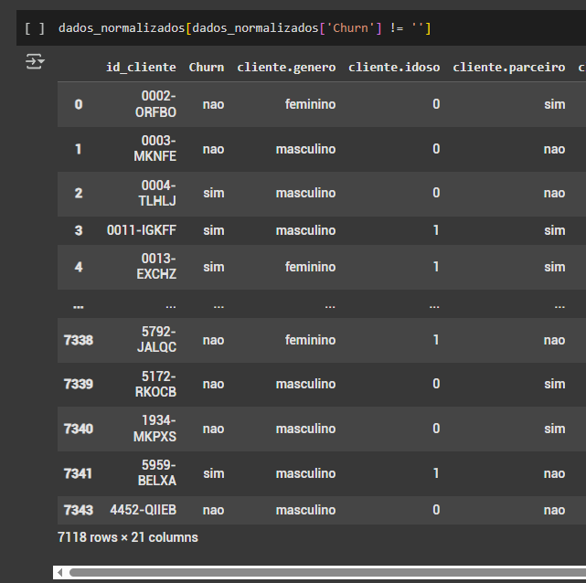Figura 21: Filtrando a coluna 'Churn' buscando conteúdo. O que está ocorrendo no código acima?
- O código está filtrando o DataFrame com o objetivo de retornar apenas linhas diferentes de
" ", ou seja, que de fato tenham conteúdo.
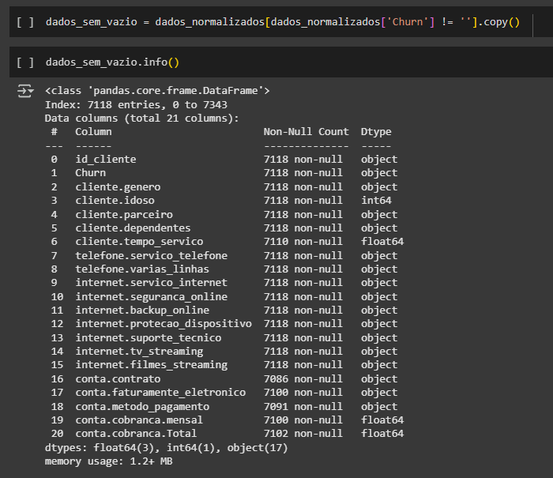Figura 22: Filtrando a coluna 'Churn' buscando conteúdo. O que está ocorrendo no código acima?
- Como optei por descartar as linhas que possuem a coluna
churncom valores nulos, estou armazenando o novo DataFrame em uma nova variáveldados_sem_vazio. - Verificando as novas informações é possível validar que a contagem de valores nulos caiu de 7344 para 7118.
Figura 23: Analisando a nova contagem de valores não nulos.
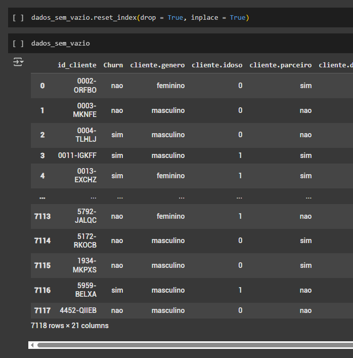Figura 24: Resetando os índices. O que está ocorrendo no código acima?
- Como o objetivo desse DataFrame é ser utilizado em um aprendizado de máquina, é necessário que os índices estejam em sequência, pois mesmo não sendo utilizados diretamente, índices desalinhados ou desordenados podem causar problemas operacionais e de compatibilidade.
Identificando Dados Duplicados e Nulos
A função
duplicated()do Pandas identifica valores duplicados em um dataframe ou series.
Figura 25: Identificando dados duplicados. Como funciona?
- a função retorna um array de valores, onde:
True: a linha é uma duplicata.False: a linha é única ou é a primeira ocorrência.
Figura 26: Series de dados duplicados. Utilizei a função
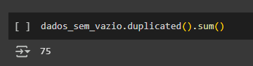sum()para somar a quantidade de valoresTrue.Figura 27: Quantidade de dados duplicados. Armazenei estes dados em uma nova variável
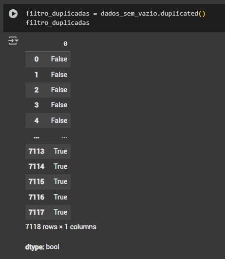filtro_duplicado.Figura 28: Armazenando dados duplicados. Utilizei o DataFrame
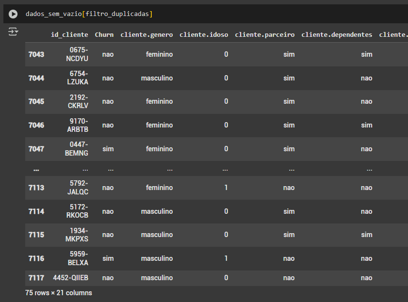dados_sem_vazioe apliquei um filtro para apresentar apenas as linhas duplicatasFigura 29: Filtro com dados duplicados. A função
drop_duplicates()é responsável por excluir as linhas duplicatasQuando utilizei novamente as funções
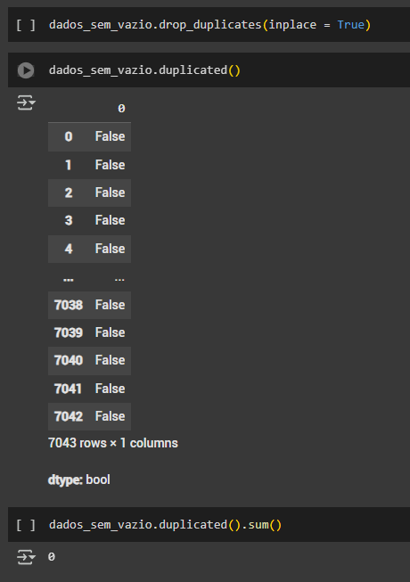duplicated()esum(), não foram retornados valoresTrue.Figura 30: Series atualizada de dados duplicados. A função
isna()é responsável por retornar valoresNaN.- O que significa
NaN? - Significa Not a Number e representa valores ausentes ou indefinidos em um conjunto de dados.
- É um tipo de dado especial do NumPy e Pandas para indicar a ausência de um valor numérico.
Figura 31: Visualizando dados NaN. Utilizando a função
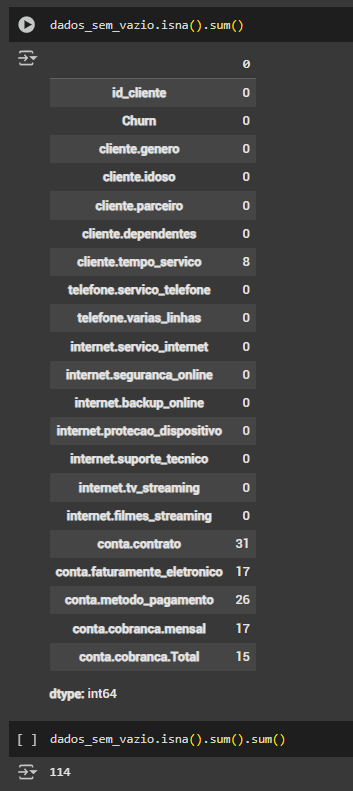sum()é retornado um DataFrame informando a quantidade de valoresNaNem cada colunaFigura 32: Quantidade de dados NaN. Para que eu possa tratar os dados e padronizar o DataFrame corretamente, preciso identificar as linhas que possuem valores NaN em qualquer coluna e então poderei definir o tratamento específico para cada tipo de dado.
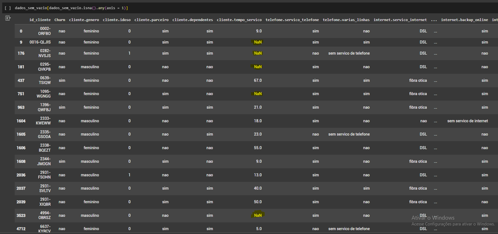Figura 33: Dataframe com dados NaN. - O que está ocorrendo no código?
isna(): cria um DataFrame booleano, onde cada célula indica se o valor é NaN (True) ou não (False).any(axis = 1): verifica se pelo menos uma coluna da linha temTrue. Retorna uma series booleana comTruepara linhas que possuemNaNeFalsepara as que não possuem.dados_sem_vazio[]: o filtro será aplicado para este DataFrame.
Analisando o DataFrame optei por tratar agora a coluna
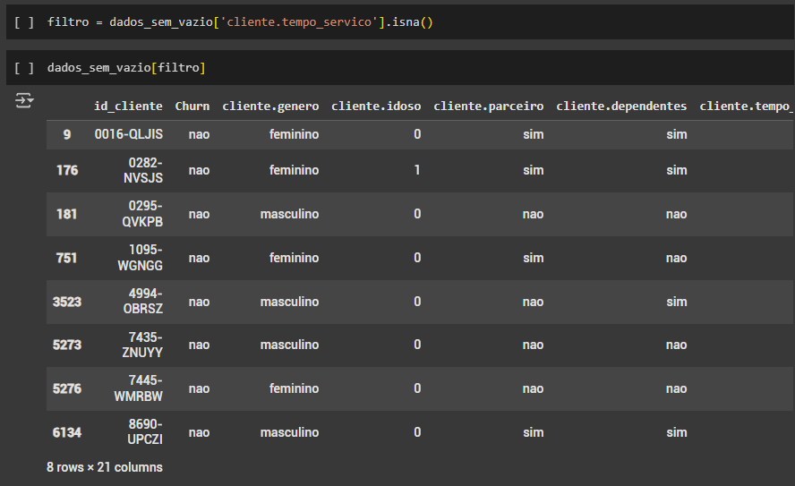cliente.tempo_servico, criei um filtro para mostrar apenas os valores NaN presentes nesta coluna e armazenei em uma nova variável chamadafiltro.Figura 34: Dados NaN filtrados na coluna 'cliente.tempo_servico'. Filtrei um pouco mais e analisei apenas colunas que possuem relação com a coluna
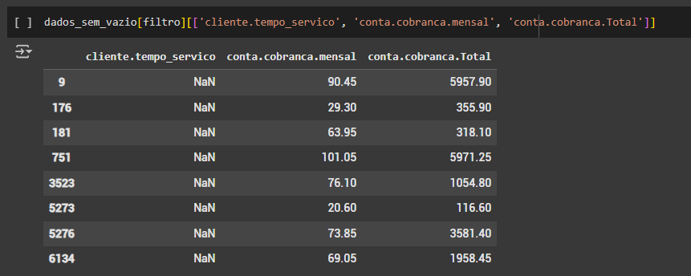cliente.tempo_servico.Figura 35: Colunas com relação com 'cliente.tempo_servico'. - Qual é a relação entre estas colunas?
- Os valores faltantes são referentes ao tempo de duração do serviço.
- se dividir o valor total pelo mensal, o resultado será o tempo de atividade do serviço.
Figura 36: Colunas com relação com 'cliente.tempo_servico'. - O que está ocorrendo no código?
- A função
fillna()substitui os valores ausentes da colunacliente.tempo_servico. - Utilizei um cálculo de divisão onde o resultado será a estimatiiva de quantos meses o serviço esteve ativo:
dados_sem_vazio['conta.cobranca.Total'] / dados_sem_vazio['conta.cobranca.mensal']. - A função
ceil()aplica aplica arredondamento para cima nos valores resultantes da divisão, garantindo que o tempo de serviço seja sempre um número inteiro arredondado para o próximo valor maior.
Analisando novamente a quantidade de valores nulos por coluna, é possível visualizar que a coluna
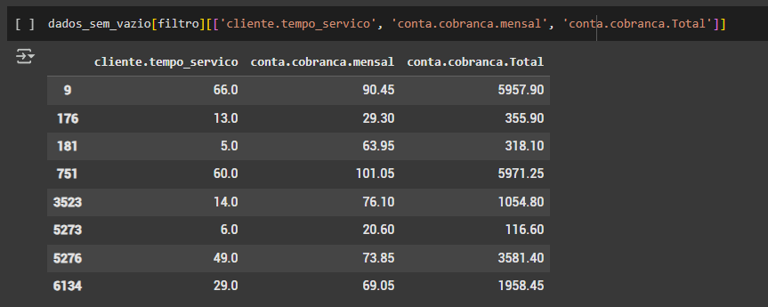cliente.tempo_serviconão possui valores nulos.Figura 36: Analisando os valores aplicados à 'cliente.tempo_servico'. 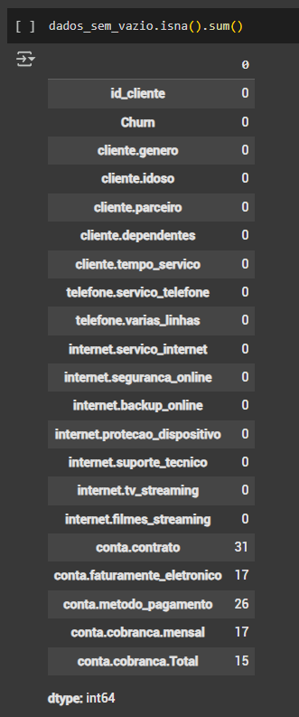Figura 36: Quantidade de valores nulos na coluna 'cliente.tempo_servico'. - Por que e como tratar valores NaN?
- Como expliquei anteriormente, valores NaN representam dados ausentes ou indefinidos e podem causar problemas em análises e modelos de aprendizado de máquina.
- A tomada de decisão para tratar os dados ausentes depende do método escolhido pelo responsável do projeto. Os dados nulos podem ser excluìdos ou substituídos.
- Como funciona a substituição dos dados NaN?
- Os dados podem ser substituídos após analisar a média ou a mediana, dessa forma, os dados serão substituídos por valores comuns presentes na coluna
- Os dados podem ser substituídos por outro tipo de cálculo, como por exemplo o que utilizei na
Figura 36: Colunas com relação com 'cliente.tempo_servico' - A tomada de decisão deve ir de encontro com o objetivo do projeto.
Ainda existem colunas que possuem valores nulos.
As colunas
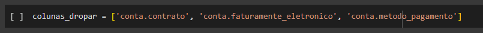conta.contrato,conta.faturamento_eletronicoeconta.metodo_pagamentopoderiam ser tratadas com alguns dos métodos informados anteriormente, porém opter por remover os valores nulos.Figura 37: Colunas com dados nulos. Armazenei estas colunas na variável
colunas_dropar.- Quantos dados serão excluídos? 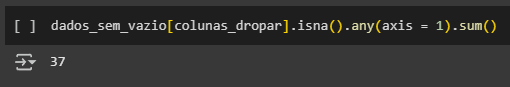
- Primeiro aplicamos a variável
colunas_droparcomo filtro no DataFramedados_sem_vazio. - A função
isna()cria uma series booleana, ondeTrueindica valores NaN eFalseindica valores não nulos. - A função
any(axis = 1)soma os valores retornados comoTrue. - A função
sum()soma os valores retornados comoTrue.
Figura 38: Quantidade de dados nulos.
Ao todo são 37 vaores nulos.
Figura 39: Dropando os dados nulos. - O que está ocorrendo no código?
- A função
dropna()remove todas as linhas que possuem NaN nas colunas armazenadas na variávelcolunas_dropar. - A função
copy()cria uma cópia independente do DataFrame resultante, evitando alterações no originaldados_sem_vazio. - Os valores retornados foram armazenados na variável
df_sem_nulos, e não fazem mais parte do DataFramedados_sem_vazio.
Figura 40: Dados nulos tratados. - Analisando valores fora do contexto
- O que são Outliers?
- São valores extremos em um conjunto de dados que se desviam significativamente da maioria dos outros valores. Eles podem indicar erros ou variações naturais e podem impactar análises estatísticas e modelos de aprendizado de máquina.
- O que é e como funciona um gráfico de Boxplot?
- É uma forma visual de representar a distribuição de um conjunto de dados, destacando mediana, quartis e possíveis outliers.
- Ele é formado por cinco números principais chamados de Resumo de Cinco Números:
Mínimo (sem outliers): o menor valor dentro do limite aceitável.1º Quartil (Q1 - 25%): 25% dos dados estão abaixo desse valor.Mediana (Q2 - 50%): o meio dos dados, onde metade dos valores estão abaixo e metade acima.3º Quartil (Q3 - 75%): 75% dos dados estão abaixo desse valor.Máximo (sem outliers): o maior valor dentro do limite aceitável.- Fórmula do Intervalo Interquartil (IQR)
- O IQR (Interquartil Range) é a diferença entre o 3º Quartil e o 1º Quartil:
- Como Identificar Outliers no Boxplot?
- São considerados Outliers os valores que estiverem fora do intervalo esperado:
- Valores abaixo do Limite Inferior ou acima do Limite Superior são Outliers e aparecem como pontos isolados no Boxplot.
- Interpretação do Boxplot
A "caixa": mostra onde está 50% dos dados (entre Q1 e Q3)A linha no meio da caixa: representa a mediana (Q2, 50%)Os "bigodes": as linhas na esquerda e direita fora da caixa, vão do menos ao maior valore dentro do intervalo permitido.Os pontos fora: são Outliers.
IQR = Q3 − Q1Esse intervalo ajuda a definir Outliers
Limite Inferior = Q1 − 1.5 × IQRLimite Superior = Q3 + 1.5 × IQR
Com isso em mente, agora posso dar continuidade no projeto para tratar valores Outliers.
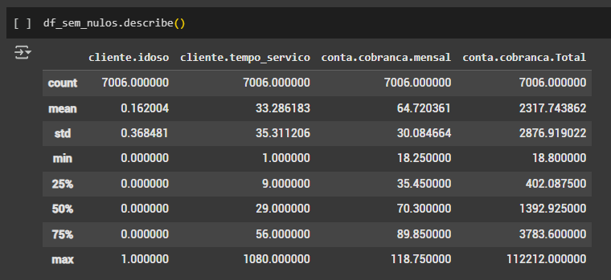Figura 41: Função Describe. A função
describe()pertence à biblioteca Pandas e é usada para gerar estatíticas descritivas de um DataFrame ou Series.Ela fornece um resumo estatítico das colunas numéricas, incluindo:
count: número total de valores não nulos.mean: média dos valores.std: desvio padrão.min: menor valor.25% (Q1): primeiro quartil.50% (Q2, mediana): metade dos dados abaixo/acima do valor.75% (Q3): terceiro quartilmax: maior valor.
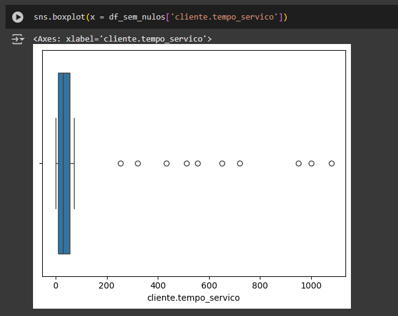Figura 42: Gráfico Boxplot. - O que está ocorrendo no código?
- O código está criando um gráfico e boxplot para visualizar a distribuição dos valores da coluna
cliente.tempo_servicodo DataFramedf_sem_nulosutilizando a bibliotecaSeaborn(sns). sns.boxplot(): função do Seaborn usada para criar o gráfico de Boxplot.x = df_sem_nulos['cliente.tempo_servico']: define os valores no eixo X do gráfico. Como não há um eixo Y definido, o boxplot será exibido horizontalmente.
É possível identificar que existem 10 valores que estão distorcendo o gráfico. Estes valores são os candidatos a Outliers.
Agora vou realizar os cálculos de limite para detectar os Outliers.
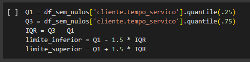Figura 43: Calculando limites. - Primeiro Quartil (25%):
Q1 = df_sem_nulos['cliente.tempo_servico'].quantile(.25). - Terceiro Quartil (75%):
Q3 = df_sem_nulos['cliente.tempo_servico'].quantile(.75). - Intervalo Interquartil:
IQR = Q3 - Q1. - Limite Inferior:
limite_inferior = Q1 - 1.5 * IQR. - Limite Superior:
limite_superior = Q1 + 1.5 * IQR.
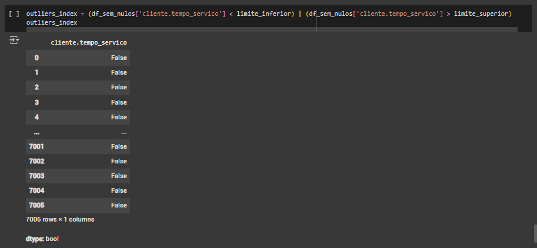Figura 44: Calculando limites. - O que está ocorrendo no código?
(df_sem_nulos['cliente.tempo_servico'] < limite_inferior):(df_sem_nulos['cliente.tempo_servico'] > limite_superior):|:
Retorna
Truepara valores menores que o limite inferior (outliers baixo).Retorna
Truepara valores maiores limite superior (outliers altos).Operador lógico que combina as duas condições, retornando
Truesempre que um valor for um outlier alto ou baixo.
Antes de seguir é necessário conhecer alguns conceitos.